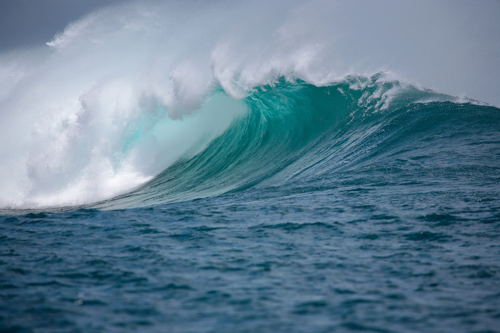

Natural_Wonders

- Mountains are large landforms that rise prominently above their surroundings, typically forming peaks.
- They are usually formed through tectonic forces or volcanic activity over millions of years.
- The Himalayas, which include Mount Everest, are the highest mountain range in the world.
- Mountains influence climate by affecting weather patterns and often have colder temperatures at higher altitudes.
- They are home to diverse ecosystems and provide habitats for many unique plant and animal species.

OCEAN
- The ocean is a vast body of salt water covering approximately 71% of Earth's surface and contains about 97% of the planet’s water
- It is conventionally divided into five major oceans: the Pacific, Atlantic, Indian, Southern, and Arctic Oceans
- The average depth of the ocean is about 3,700 meters (12,100 feet), with the deepest point being the Mariana Trench, nearly 11,000 meters (36,000 feet) deep
- The ocean is a vast body of salt water covering approximately 71% of Earth's surface and contains about 97% of the planet’s water
- It is conventionally divided into five major oceans: the Pacific, Atlantic, Indian, Southern, and Arctic Oceans
- The average depth of the ocean is about 3,700 meters (12,100 feet), with the deepest point being the Mariana Trench, nearly 11,000 meters (36,000 feet) deep